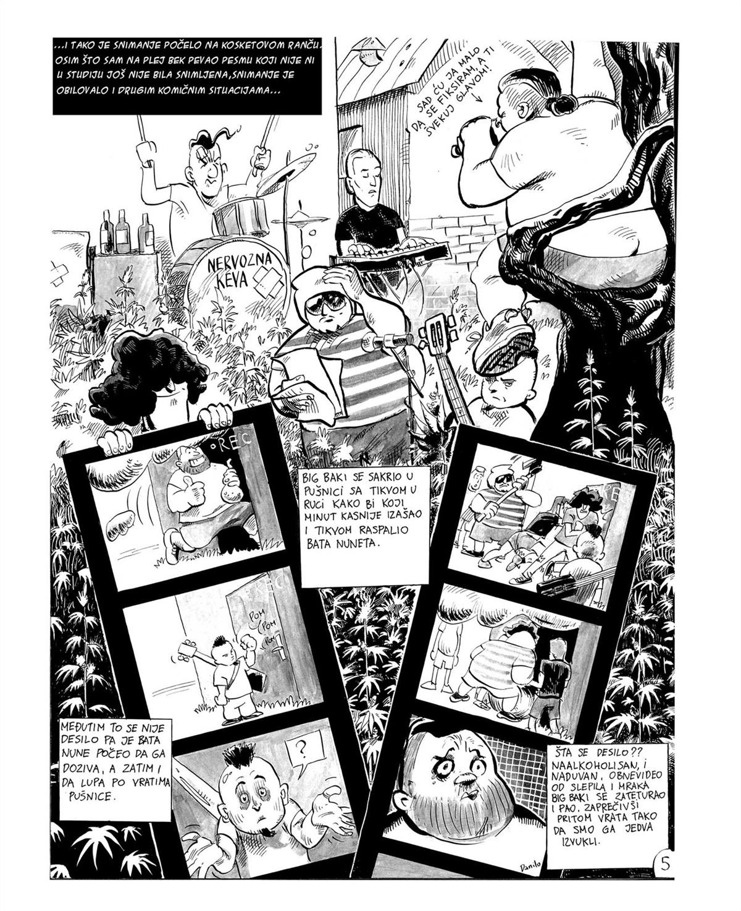
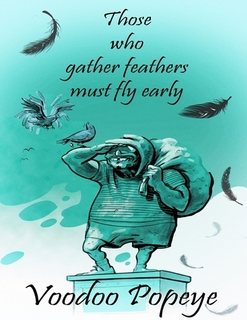

Strip · 2005 · Draslar partner
Skupljači perja rano lete
Neobična strip-knjiga muzičara Radenka Stojanovića, alias Vudu Popaja, i trojice strip crtača: Nenada Stevanovića, Draška Tubića i Danila Rečevića.

O stripu
Pet priča, uglavnom alternativnog karaktera, smeštenih u tipična srpska predgrađa i provinciju. Junaci su marginalizovani antiheroji, besposličari, rok muzičari bez para, Deda Mrazevi u penziji, loši režiseri horor filmova.
Tu je i hip-hop muzičar koji se razočara u civilizaciju i ode na Južni pol da se druži sa pingvinima — gde čak radi kao DJ na velikom glečeru. I mladić sa planine koji ostvaruje san zaposlivši se u lokalnoj firmi. U svim pričama ima crnog humora i malo Beketove atmosfere. Crteži su crno-beli, osim jedne priče koja je u boji.
Iz stripa


English edition · e-book
Those Who Gather Feathers Must Fly Early
by Radenko Stojanović
There are five stories in the comic. Most of it is alternative in character, and most of the stories take place in typical Serbian suburbs and provinces. The characters are marginalized anti-heroes, idlers, rock musicians without money, retired Santa Clauses, lousy horror movie directors.
There is also a hip-hop musician who becomes disappointed in civilization and goes to the South Pole to hang out with penguins — he even works as a DJ on a big glacier. In all of the stories you will find black humor and a touch of Beckett-like atmosphere. Drawings are black-and-white, except for the story “Something Is Rotten in This Age of Hope”.
Get it on Lulu.com